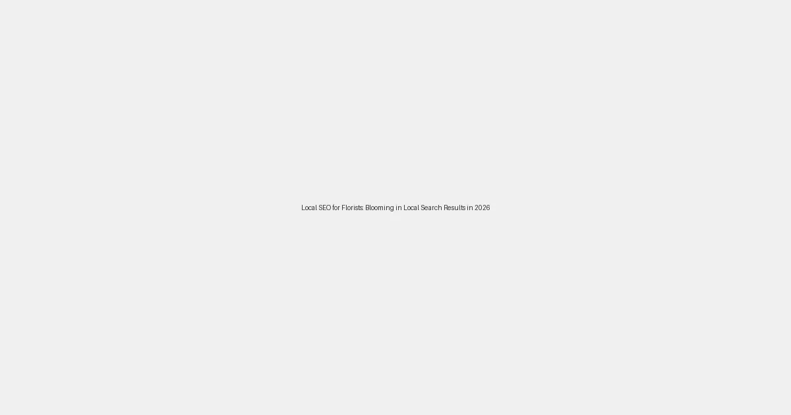

Local SEO for Florists: Blooming in Local Search Results in 2026

In 2026, the tradition of gifting flowers for celebrations, condolences, and everyday gestures of affection continues to flourish. For your local flower shop, being the go-to source for fresh blooms and exquisite arrangements means being easily discoverable online. When customers search for "flower delivery near me," "florist in [your city]," or "sympathy flowers [your neighborhood]," your shop needs to be front and center. This is where a strategic Local SEO approach helps your floral business bloom in local search results.
Why Local SEO is Essential for Every Florist
The floral industry is inherently local. Customers typically need flowers for immediate delivery or pickup within a specific geographic area, making local search visibility a critical component of your marketing. Local SEO ensures your business appears prominently when potential customers in your area are actively seeking floral services, allowing you to:
- Capture Urgent Demands: Be the first choice for "last-minute flower delivery" or "florist open near me."
- Showcase Your Creativity: Attract customers looking for unique arrangements for local events or personal gifts.
- Build Community Connections: Establish your shop as an integral part of local celebrations and special moments.
- Stand Out from Online Giants: Compete effectively against larger online flower delivery services by highlighting your local expertise and personalized touch.
Essential Local SEO Strategies for Florists in 2026
1. Perfect Your Google Business Profile (GBP)
Your GBP is your digital shop window. Ensure it's vibrant and fully optimized to attract local attention:
- Accurate & Consistent NAP: Your Business Name, Address, and Phone number must be perfectly uniform across all online listings.
- Categories: Select precise primary and secondary categories like "Florist," "Flower Shop," "Wedding Florist," "Event Planner," or "Gift Shop" (if applicable).
- Detailed Services: List all your offerings, from everyday bouquets and plant sales to wedding arrangements, corporate events, and funeral flowers, detailing customization options and delivery services.
- Hours of Operation: Keep these meticulously updated, especially for holidays like Valentine's Day, Mother's Day, and seasonal events.
- High-Quality Photos & Videos: Showcase your most beautiful arrangements, your welcoming store interior, and your team in action. Highlight seasonal specials and unique floral designs.
- GBP Posts: Announce special offers (e.g., "Mother's Day Bouquet Special"), new seasonal flowers, workshops, or highlight customer testimonials.
- Encourage & Respond to Reviews: Positive reviews, especially those mentioning specific arrangements or excellent service, are incredibly valuable. Actively encourage satisfied customers to share their experiences and respond thoughtfully to all feedback.
- Action Links: Provide direct links for "Order Online," "Call Now," or "Request a Quote for Events."
2. Cultivate a Hyper-Local Keyword & Content Strategy
Think about how local customers search for flowers for different occasions and locations:
- "Flower delivery [city/neighborhood]"
- "Wedding florist [your city]"
- "Anniversary flowers near me"
- "Best local flower shop [suburb name]"
- "Same-day flower delivery [zip code]"
Integrate these keywords naturally into your website's product descriptions, service pages, seasonal guides, and blog content (e.g., "Top 5 Flowers for Spring in [Your City]").
Create dedicated landing pages for major events or specific neighborhoods you serve, detailing your unique offerings and delivery advantages in that community.
3. Grow Local Citations and Industry Backlinks
Secure citations (consistent mentions of your business NAP) from local business directories, wedding planning sites, event directories, and community guides. Seek backlinks from local event venues, wedding planners, gift shops, and other complementary businesses. These connections boost your local search authority and help you become a trusted local resource.
4. Mobile-Optimized Website for Seamless Ordering
Many customers will browse and order flowers on their mobile devices, often on the go. Ensure your website is:
- Fully Responsive: Flawless display of your beautiful arrangements on all devices.
- Fast-Loading: Crucial for capturing impulse purchases and users with urgent needs.
- Easy to Navigate: Clear categories for occasions, flower types, and pricing, with prominent contact information.
- Optimized for Online Ordering: A streamlined, mobile-friendly e-commerce experience is paramount for conversion.
The LocalLeads Advantage for Florists
LocalLeads offers a powerful solution for florists eager to attract more local customers. Our platform can generate hundreds of niche-specific, SEO-optimized pages tailored to various occasions, flower types, and specific local areas (e.g., "Wedding Flowers [City Name]", "Birthday Bouquets [Neighborhood]", "Sympathy Flower Delivery [Suburb]"). This automated approach ensures your business captures high-intent local search traffic without extensive manual effort, allowing you to focus on your artistry and delivering beautiful floral creations.
By implementing these Local SEO strategies, your flower shop can significantly enhance its online visibility, attract a steady stream of local customers, and solidify its position as the premier florist in your community in 2026 and beyond.